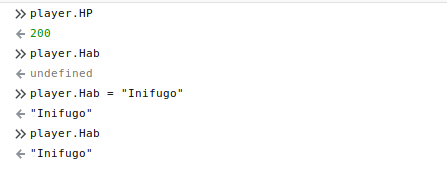
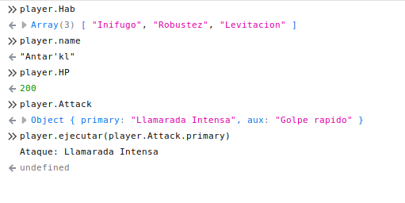
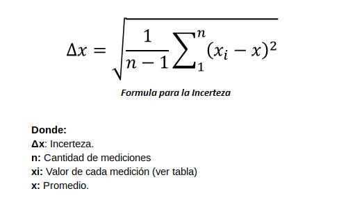
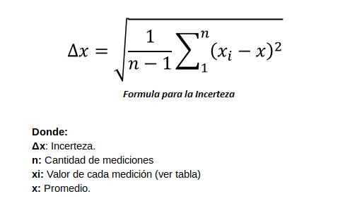

El manejo y almacenamiento de conjuntos de datos es una herramenita indispensable en la lógica de todo programa. Con el fin de dar solución a esta necesidad, JavaScript implemento la clase Array. Esto dió apertura a la creación, control y uso de arreglos en los sitios web.
Las características principales de los arreglos son: Proporcionar un control de datos sencillo y de alto nivel; comportarse de igual forma que las listas dinámicas; tener la capacidad de almacenar elementos de distintos tipos dentro del mismo arreglo; entre otras mas.
Declaración.
Existen diversas formas para inicializar un arreglo en JavaScript. Por su utilidad se estudirán dos: Haciendo uso de la notación de arreglos estándar de JS, y haciendo uso del contructor de la clase Array.
El primer método consiste, literalmente, en asignarle un arreglo a una variable. La sintaxis deriva de encerrar los datos (separados por comas) entre corchetes simples. Algunos ejemplos de este método son:
let listNumbers = [1,23,4,5,45,87];
let listLetters = ['A','h','e','v','F'];
let listColors = ["red","yellow","white","green"];
El segundo método se basa en el hecho que un arreglo es una instancia de la clase Array, por lo que puede hacerse uso del constructor de la misma. A partir de ello se puede declarar arreglos de la siguiente forma:
let listNumbers = new Array(1,23,4,5,45,87);
let listLetters = new Array('A','h','e','v','F');
let listMixed = new Array(1,'c',"red",34);
Lectura complementaria: JavaScript Arrays [W3S]
Control de datos.
Una de las utilidades mas grandes para el manejo y control de arreglos es que dentro de la clase Array se encuentran definidas una serie de propiedades y métodos, que facilitan la manipulación del contenido interno de cada una de sus instancias. A continuación se enumerarán, los atributos, propiedades y métodos mas representativos y útiles para el manejo de arreglos. Para facilitar la enseñanza, todos los ejemplos estarán basados en el siguiente arreglo.
let listLetters = ['A','h','e','v','F'];
Acceso por índice a un elemento del arreglo.
Se hace uso de la sintaxis básica de acceso a un elemento dentro un arreglo. Ejemplo:
var firstLetter = listLetters[0];
// Almacena 'A'
var lastLetter = listLetters[listLetters.lenght - 1];
// Almacena 'F'
.lenght;
Este atributo corresponde a la cantidad de datos que tiene actualmente un arreglo. Ejemplo:
let cantLetters = listLetters.lenght;
console.log(cantLetters); //Imprimirá 5.
.forEach(function);
Método que recorre todos los elementos un arreglo y realiza una función específica por cada uno de ellos. Ejemplo:
listLetters.forEach((letter, index)=>{
console.log("Letra "+index+": "+letter);
//Imprimirá cada valor en la consola
});
.push(value);
Método que añade un elemento al final del arreglo. Ejemplo:
listLetters.push('z');
//['A','h','e','v','F','z']
.pop();
Método que elimina el elemento final del arreglo. Este valor es retornado. Ejemplo:
var lastItem = listLetters.pop(); //Almacena 'z'
//['A','h','e','v','F']
.shift();
Método que elimina el elemento inicial de un arreglo. De igual forma el valor es retornado. Ejemplo:
var firstItem = listLetters.shift(); //Almacena 'A'
//['h','e','v','F']
.unshift();
Método que inserta un nuevo elemento en la primera posición del arreglo. Ejemplo:
listLetters.unshift('x');
//['x','h','e','v','F']
.splice(index, n)
Método que elimina una cantidad específica de elementos en un arreglo. Recibe por parametros el índice donde se iniciará a eliminar, y la cantidad de datos a eliminar. Ejemplo:
listLetters.splice(2,1);
//['x','h','v','F']
listLetters.splice(1,2);
//['x','F']
Lectura complementaria: Métodos de Array [MDN]
Como se había mencionado con anterioridad JavaScript es un lenguaje Orientado a Objetos, por lo el manejo de instancias y objetos no es ajeno a él. Un dato de tipo object, representa una colección de atributos y propiedades arbitrarias que tienen un valor específico. Normalmente, los objetos se almacenan dentro de variables, desde las cuales se puede acceder al valor de cada uno de sus atributos.
La sintaxis básica para definir un objeto es la siguiente:
<var|let> <identificador> = {
<identificador1>: <valor>[,
<identificador2>: <valor>[,
<identificador3>: <valor>[,
...]]]
};
Algunos ejemplos de definiciones de objetos:
var carro1 = {
marca: "Toyota",
modelo: "Corolla",
annio: 2003
};
var player = {
name: "Antar'kl",
HP: 200,
Exp: 200015
};
Esto implica que las llaves tienen dos significados en JavaScript. Al comienzo de una sentencia (como for, while, function, etc), representan un bloque de declaraciones. En cualquier otra posición, describen un objeto.
Una vez definido un objeto, se puede acceder al valor de sus atributos mediante el operador punto (.); cabe resaltar que en caso de no estar declarado algún atributo al que se trate de acceder, este retornará indefinido.

Además los atributos de los objetos no solo pueden almacenar datos primitivos, sino que también son capaces de guardar estructuras de datos mas complejas como arreglos, funciones, o inclusos otros objetos.
var player = {
name: "Antar'kl",
HP: 200,
exp: 200015,
Hab: ["Inifugo", "Robustez", "Levitacion"],
Attack: {
primary:"Llamarada Intensa",
aux:"Golpe rapido"
},
ejecutar: (attk)=>{
console.log("Ataque: "+attk);
}
};

A partir de esto, se pueden realizar caulquier tipo de operación o sentencia con los objetos con sus respectivos atributos y funciones.
Lectura complementaria: Trabajando con objetos [MDN]
Recordando algunos conceptos, sabemos que una clase es un modelo que define un conjunto de variables, estados, y métodos apropiados para definir el comportamiento de cierta estructura de datos. Cada objeto creado a partir de la clase se denomina instancia de la clase.
En JavaScript las clases son "funciones especiales", tal y como el caso de las expresiones de funciones y declaraciones de funciones. Existen dos formas de definir una clase, las cuales se ampliarán a continuación:
Declaración de clase.
Este método de definición de clase implica el uso de la palabra reservada class seguido de un identificador para la clase. Esta definición será efectiva dentro del mismo contexto en el que esté inmerso. La sintaxis es la siguiente:
class <identificador>{
//definición
}
A forma de ejemplo tenemos la siguiente declaración de clase, con una instancia de ella:
class Player{
constructor(name, HP){
this.name = name;
this.HP = HP;
this.exp = 0;
this.Hab = [];
}
insertHab(newHab){
this.Hab.push(newHab);
}
}
var player1 = new Player("Antal", 300);
player1.insertHab("Mutacion");
Expresiones de clases.
Este método implica la introducción de clases anonimas, requiriendo el uso solo de la palabra reservada class y opcionalmente el uso de un identificador. Esta expresión debe ser almacenada en alguna variable que será la encargada de instanciar objetos de dicha clase. A continuación se presenta la sintaxis, con el ejemplo anterior reescrito:
<identificador> <n_variable> = class [identificador]{
//definición
}
var Player = class{
constructor(name, HP){
this.name = name;
this.HP = HP;
this.exp = 0;
this.Hab = [];
}
insertHab(newHab){
this.Hab.push(newHab);
}
}
var player1 = new Player("Antal", 300);
player1.insertHab("Mutacion");
Para ampliar el conocimiento acerca de aspectos como declaración de métodos y atributos, herencia, entre otros, se recomienda la lectura de: Clases [MDN]
Realice los siguientes ejercicios, teniendo en cuenta lo básico de este Laboratorio. La primera parte es presencial, por lo que su límite de entrega será en los horarios estipulados de cada grupo de laboratorio. La segunda parte es tarea la cual será entregada el mismo día como límite a las 23:55.
La forma de entrega será de la misma forma que el laboratorio anterior; un archivo por ejercicio con el nombre Ejercicio_<Numero>.js, subidos a través de un repositorio de git. Los ejercicios de la tarea serán entregados en un repositorio a parte, con la misma dinámica.
Realizar todas las validaciones que crea necesarias.
Listado
-
Realice una función en JS, que dados un número y un arreglo como parámetros, retorne cuantas ocurrencias existen de ese número dentro del arreglo.
-
Realice una función que reciba un arreglo de datos numéricos, y muestre la suma de todos los elementos del arreglo y su promedio.
-
Realice una función que reciba un arreglo como parámetro y liste los tipos de datos de sus elementos y cuantos de cada tipo.
-
Dado un arreglo de números enteros despliegue la suma del primero y último elemento, la suma del segundo y penúltimo, la suma del tercer y antepenúltimo, y así sucesivamente hasta llegar al centro del arreglo. Si la cantidad de elementos es impar, el elemento central será sumado consigo mismo.
-
Dado un arreglo cuyos elementos son de diversos tipos, cree una función que retorna un arreglo con los elementos de un solo tipo en específico. El tipo de dato debe ser pasado como parametro.
-
Cree una función que dada una cadena, retorne la cadena encriptada utilizando la clave murciélago.

-
En las prácticas de laboratorio de física, se pide entregar un reporte con todas las mediciones que se han realizado junto con su promedio e incerteza. Para el cálculo de dichos indicadores se hará uso de las siguientes fórmulas:
 

Para el ejemplo anterior el promedio junto a su incerteza de las mediciones es: X=14.4 ± 0.1
Realice un función que reciba las mediciones realizadas, y en base a esto calcular el promedio y la incerteza de las medidas dadas.
-
Escriba una función que realice la suma de dos matrices A y B. Deposite el resultado en la matriz C. Deberá validar que la operación se pueda realizar.
-
Elabore una función que llene un arreglo con 20 números de forma aleatoria (random), y que pida al usuario adivinar un número, si lo adivina mostrará un mensaje indicando que ganó, si no mostrará que perdió.
-
Realice una función que reciba por parametro los siguientes datos al usuario: Nombre, Apellido, Fecha de nacimiento, Número de teléfono, Correo electrónico. Estos deberán ser almacenado en un objeto y mostrados en la consola del navegador.
-
Realice una función que cree un objeto usuario (Idem al anterior), y lo almacene en un arreglo de usuarios. El arreglo debe de ser global.
-
Realice un programa que permita:
-
Ingresar una persona.
-
Buscar una persona.
-
Modificar una persona.
-
Eliminar una persona.
-
Mostrar todas las personas.
-
Salir del programa.
El menú debe repertirse después de realizar cualquiera de estas acciones.
Tarea.
-
Michelle es una chica emprendedora, la cual ha decidido poner su venta de dulces llamada “La jefecita”. Ella distribuye sus dulces en laboratorios de la universidad donde estudia. En los últimos días, ella ha percibido que no posee control de sus ventas, por lo tanto, ella ha pedido a los alumnos de la materia PW le creen un prototipo de sistema, utilizando JavaScript.
¿Qué debe realizar el sistema?
Crear un menú que tenga la posibilidad de realizar:
-
Agregar producto.
-
Modificar Stock.
-
Registrar venta y reducir stock.
-
Mostrar promedio de ventas realizadas
-
Mostrar productos con stock 0.
-
Salir del sistema.
Cada producto deberá representarse a través de un objeto en JS con los siguientes atributos:
-
Código.
-
Descripción del producto.
-
Tipo de producto.
-
Precio de compra (Michelle).
-
Precio de venta (Clientes).
-
Stock.
Los productos se deberán almacenar a través de un arreglo. Para poder ingresar los datos deberá hacer uso de la función “prompt”.
-
Crear un objeto en JavaScript, el cual servirá para realizar conversiones de medidas, tanto de longitud como de temperatura. Deberá tener un método, el cual recibirá 4 parámetros: La medida, la unidad en la que está la medida, la unidad a la que se desea convertir y el tipo de medida (L por longitud, T de temperatura).
Las conversiones que podrá realizar son las siguientes:
-
Metros <=> Centímetros.
-
Kilómetros <=> Metros.
-
Pies <=> Metros.
-
Celsius <=> Fahrenheit.
-
Kelvin <=> Fahrenheit.
-
Kelvin <=> Celsius.
Ejemplo de llamada del método: convertor.convertir(100, m, cm, L);
Ejemplo de salida: 10000cm.